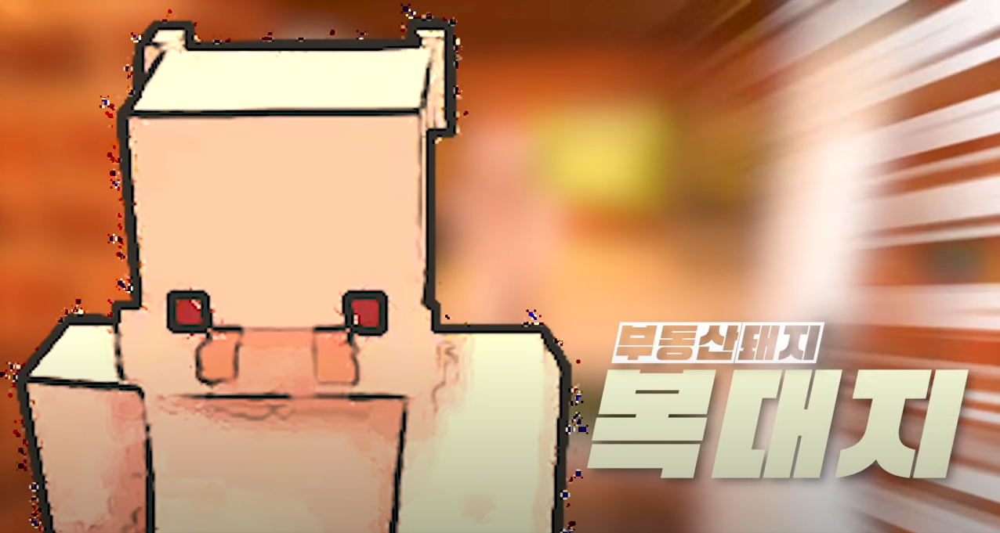

“무차무차해야겄는디?”1
“나느은~ 내가제-일 믿음직스럽지.”
“나가 이 마을 귀염둥이여~”
“우리 사돈의 팔촌의 오촌 당숙이 군수랑께?”
“아니어요~ 털이 있어요, 뽀.송.뽀.송하게~”
“길을 잃었느냐, 어린 양이여”
|  |
| 우정리 복돼지 복덕방의 주인이자 야망 넘치는 돼지, ‘복 대지’. |
| 이름 | 복대지 | 대표색 | #fcae9f |
| 동물 | 돼지 | 아이콘 | |
| 나이 | 29세 | 주인 | 복돼지 복덕방 주인 |
자빱이 처음 우정리에 들어와 입주하게 된 지하실 역시 대지네 집이었다. 지하에는 네 명이 살 수 있으나 방 두 개 당 화장실 하나를 공유해야 하는 데다가 변기가 있는 곳의 문이 투명이다! 무척 좁고 존재 자체로 인권 침해 같은 구석이 있지만, 집세는 나름대로 싼 편이다. 땡전 한 푼없이 내려온 자빱에게 임대료를 1회차에 한해 절반이나 깎아주기도 하는 대인배다.
우정리에서 제일가는 부자라고 한다. 이장네 집을 언젠가 사들여 매물로 내놓을 포부를 품고 있으며, 거의 모든 상황에서 당황하는 법이 없다. 칭찬을 매우 좋아하는 듯.
선글라스를 쓴 자신이 저팔계를 닮았다고 해서 안 쓴다고 한다.
좋아하는 음식은 프레첼. 돼지코 모양이라 좋다고. 이 외에도 외국 전통 음식들을 좋아하는 고급진 입맛의 소유자로, 기린다방 음식을 거의 먹지 않는데다가 기린의 앞에서 음식 불평을 한 적도 있다(!). 돼지로 만든 음식을 먹지 않는다. 덧붙여 10회차가 될 때까지 나오지 않았지만 대지가 가장 좋아하는 음식은 러시아 전통 음식 '푸틴'이라고 한다.